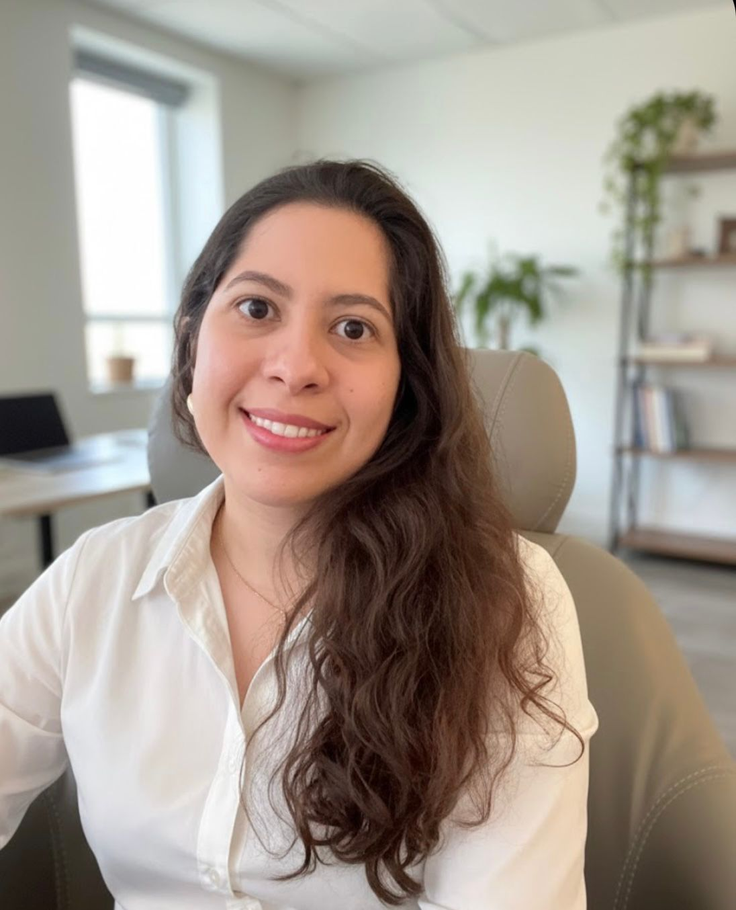
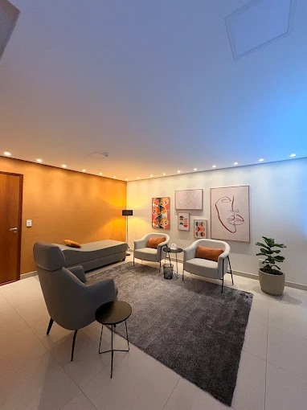
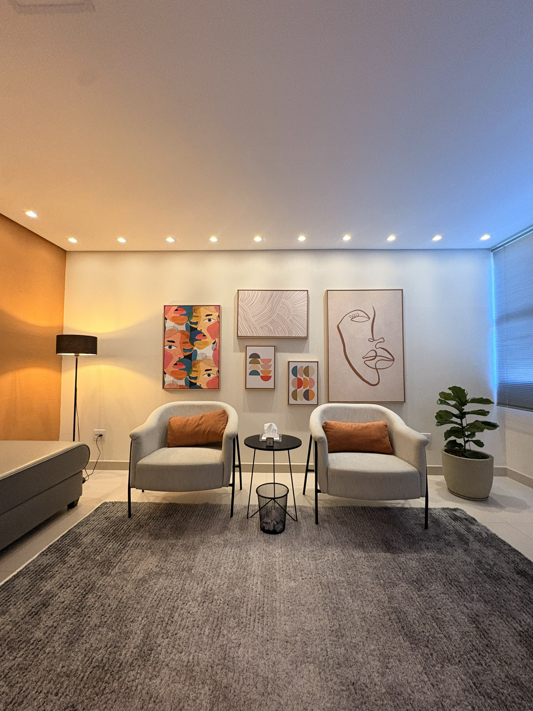

Há momentos em que algo se repete, aperta ou confunde…e lidar com isso sozinho já não parece suficiente. A análise é um convite: falar livremente, se escutar com mais profundidade e se aproximar do que, muitas vezes, ainda não tem palavras — mas insiste em se fazer sentir.
A análise é um convite para falar livremente, se escutar de verdade e compreender o que se move por trás das suas questões.

Psicóloga · CRP 06/165889Uma inquietação constante, difícil de nomear, que atravessa seus dias.
Situações e relações que parecem sempre levar ao mesmo lugar.
A mente que não desacelera e o corpo que carrega esse excesso.
Insegurança, medo de rejeição ou conflitos que se acumulam.
Uma sensação de desconexão de si e daquilo que antes fazia sentido.
Momentos da vida em que se torna difícil escutar o que você realmente quer.
E mesmo tentando dar conta de tudo sozinho(a), algo continua pedindo escuta.
Os atendimentos são sempre pautados pela ética psicanalítica, in um ambiente livre de julgamentos, onde você pode se sentir à vontade para compartilhar suas questões mais profundas.
Agendar sessãoVocê me chama no WhatsApp, tira suas dúvidas e combinamos o melhor horário — presencial em Marília ou online, como preferir.
Nas sessões iniciais, acolho sua história e o que te trouxe até aqui, com tempo e sem julgamentos.
Seguimos juntos em sessões regulares, construindo um espaço de escuta que respeita o seu tempo.
Sou psicóloga clínica orientada pela Psicanálise, moro em Marília, interior do estado de São Paulo. Com formação contínua em Psicanálise e Psicopatologia, dedico-me a ajudar você a explorar suas emoções, compreender padrões e encontrar estratégias para lidar com os desafios da vida.
Atendo presencialmente em Marília e online em todos os lugares, mesmo à distância, de onde você estiver, é possível construir um espaço de escuta. Meu trabalho é pautado pela ética psicanalítica, com o compromisso de oferecer um espaço de escuta cuidadoso, acolhedor e livre de julgamentos.
Vamos iniciar essa jornada? Estou aqui para seguirmos juntos!
Vamos conversar?Preparei um ambiente acolhedor, sigiloso e confortável no centro de Marília, pensado para que você se sinta à vontade durante suas sessões presenciais.


Se a sua dúvida não estiver aqui, é só me chamar no WhatsApp — respondo com prazer.
Atendimento presencial no centro de Marília e online em todos os lugares. Escolha o formato que fizer mais sentido para você.
“Qual é sua responsabilidade na desordem da qual você se queixa?”— Sigmund Freud
Você não precisa chegar com tudo resolvido — nem saber por onde começar. É só chamar, e a gente segue juntos a partir daí.